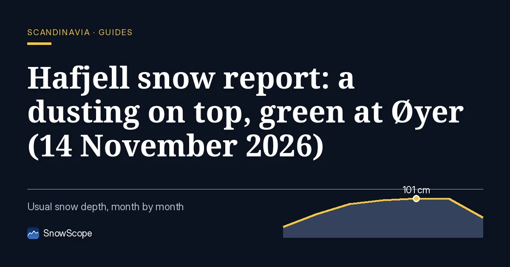

Hafjell snow report: a dusting on top, green at Øyer (14 November 2026)
Hafjell sits just north of Lillehammer in a region caught between autumn and winter. The snow map shows roughly 2 cm at the summit near 1058 m and nothing down at the base by Øyer. This is a thin start, well below what the past 46 winters tell us to expect on this date.
See the live snow forecast for Hafjell in the SnowScope appSnow depth, powder alerts and the 3D map, free.

What the numbers show right now
On 14 November, mid-mountain slopes around 625 m hold about 10 to 20 cm in a typical winter. Today Hafjell's estimates are much lower: the top has roughly 2 cm, mid-slopes around 10 cm according to forecasts, and the base is bare. The nearest snow station that actually measures depth, Vest-Torpa at 542 m and 41 km to the south-west, recorded 12 cm on 13 November, so the broader region fared a little better.
The past week added only small amounts: perhaps 4 cm at the top and 1 cm at the base, spread across several light snow showers. Much of that has already melted or settled into the thin layer you see now. This is early-season snow at its most fragile. Bare rock, heather and grass show through on slopes away from the grooming machines.

Height makes the difference this week
The forecast for the next seven days splits the mountain into two zones. The summit and upper plateaus are due to receive about 9 cm, while mid-slopes around 625 m should see roughly 8 cm. The base, though, looks stuck: almost nothing is forecast to settle there, and roughly 60 percent of the precipitation falling in the lower zones will arrive as rain.
The snow line—the boundary between snow and rain—will hover around 310 to 420 m. This means the access roads and village approaches will stay wet while the high slopes turn white. Early morning brings icy patches as night cold meets those wet surfaces, so drive with care if you are scouting the area before opening day.
How this compares with past Novembers
Over 46 winters, the top of Hafjell usually holds 25 cm on 14 November. The mid-slopes typically have 20 cm, and the base 10 cm. Right now all three elevations are well short. However, thin starts are not rare in early November. In roughly one winter out of four, the base has zero snow on this date. At the summit, one winter in ten holds only 2 cm or less.
The pattern ahead is also familiar: snow concentrates at altitude while the valley stays marginal. By the end of November the top typically reaches 46 cm and the mid-slopes 39 cm. By mid-December those figures climb to 58 cm and 50 cm. The base usually catches up more slowly, reaching 27 cm by the end of November and 39 cm by mid-December.
The long white season ahead
Hafjell's high point sits at 1058 m, and at that elevation snow usually arrives by mid-October and lingers until early June. The winter deepens steadily: by late February the top averages 79 cm, and by the end of March it peaks at around 106 cm. The upper mountain enjoys about 217 snow days per winter across the full season.
The mapped ski area spans 39 km of runs served by 17 lifts, so once the snow fills in there is room to spread out. Early-season runs tend to cluster on higher sheltered slopes and north-facing aspects. Lower green runs and south-facing terrain take longer to build coverage and hold it through warm spells.
When you can ski here
Hafjell plans to open on 27 November 2026 and close on 11 April 2027. That date depends on snowmaking to build a base, which needs several cold nights. Follow the resort's own opening-hours page for updates, especially if warm weather delays the grooming schedule.
If you are keen to ski now, seek the high plateaus and ridges behind the main ski area where natural snow accumulates more reliably. Lower slopes remain too patchy and too close to the rain line to offer consistent riding. The base of the mountain, in particular, will stay bare or slushy until December brings sustained cold.
Tips for skiers
- Aim high this week: slopes above 600 m will have usable snow by late November, while lower runs will stay thin or bare until mid-December.
- Expect icy access roads and paths in the valley each morning before the sun rises, because rain falls low and cold nights freeze it hard.
- Watch the resort's opening bulletin for the exact start date. Early-season operations depend on snowmaking, which requires several days of frost.
- Pack layers for a wide temperature swing: the base can be near freezing in rain, while the summit sits well below zero with fresh snow.
- Avoid off-piste terrain below 400 m. Rocks and forest debris lie close to the surface under this thin early snow. Check the official avalanche bulletin from Varsom (NVE) before venturing beyond groomed slopes anywhere on the hill.
About these numbers
Resort snow depths are the deepest snow on the resort's upper slopes on the date shown; they are estimates for an area, not a measurement at one point. Forecasts can change. Always read the official avalanche bulletin before going off-piste.
Official avalanche bulletins: Varsom (NVE)
Cite this report
For research, teaching or the press: the numbers and charts are free to reuse under CC BY 4.0 with this citation.
SnowScope (2026), Hafjell snow report: a dusting on top, green at Øyer (14 November 2026), https://snowscope.app/blog/en/2026/11/hafjell-snow-report-14-november-2026.html, accessed 2026-11-14
SnowScope (Atlas Labs). (2026, November 14). Hafjell snow report: a dusting on top, green at Øyer (14 November 2026). SnowScope snow reports. https://snowscope.app/blog/en/2026/11/hafjell-snow-report-14-november-2026.html
BibTeX
@misc{snowscope2026hafjellsnowreport14novem,
author = {{SnowScope (Atlas Labs)}},
title = {Hafjell snow report: a dusting on top, green at Øyer (14 November 2026)},
year = {2026},
month = nov,
howpublished = {\url{https://snowscope.app/blog/en/2026/11/hafjell-snow-report-14-november-2026.html}},
note = {Published 2026-11-14 16:19 UTC; accessed 2026-11-14}
}· CC BY 4.0 · Methods, data and tools →
Hafjell: snow and temperature by height, this winter vs last (tools) →
Follow Hafjell
Free: a message when fresh snow is coming, and the forecast every morning.
More snow reports

Luleå's airport sent no snow depth today, but six surrounding stations all measured 3 to 7 cm of fresh snow on 13 November 2026—a normal start for mid-November.

On 13 November, Kiruna measured 0 cm of snow for the first time in 46 winters. The forecast brings 1–2 cm this weekend, still far short of the typical 23 cm.